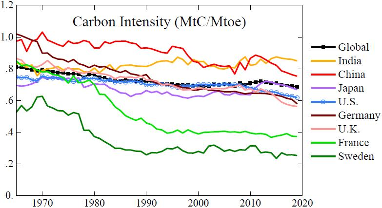

29 Carbon intensity of Energy

That chart – fossil fuel carbon (GtC) emitted per unit energy (Gt of oil equivalent) – is arguably the best summary of how well the world is doing in moving to carbon-free energy. Atmospheric CO 2 may approximately stabilize when we reach a carbon intensity near 0.25, but carbon intensity must be closer to zero to draw down atmospheric CO 2 and cool Earth to a level that stabilizes ice sheets and terminates tundra melt. Unfortunately, global carbon intensity remains stubbornly high – almost 0.7 – in part because emerging economies, such as China and India, get much of their energy from coal. Moreover, progress in reducing carbon intensity is inadequate in most nations worldwide. Sweden is a notable exception. How did Sweden do it? Once, when a Swedish minister showed a graph similar to Fig. 47.5, I asked how they achieved the rapid drop of carbon emissions between the mid-1970s and mid-1980s? The answer: “we introduced combined heat and power.” Wonderful! This suggests that if we get the rest of the world to adopt combined heat and power, the global warming problem will be almost solved. Eh, not so much. A Swedish engineer told me that the main reason was that Sweden completed 10 nuclear power plants in that decade. I interpreted the conflicting answers as a difference between scientists and ministers. The scientist looks at numbers and facts objectively, while the minister bears politics in mind, and the Swedish government had become quite anti-nuclear. Both answers were true, but the minister was misleading – hiding the crucial information.
[James Hansen: Sophies Planet Ch.47]